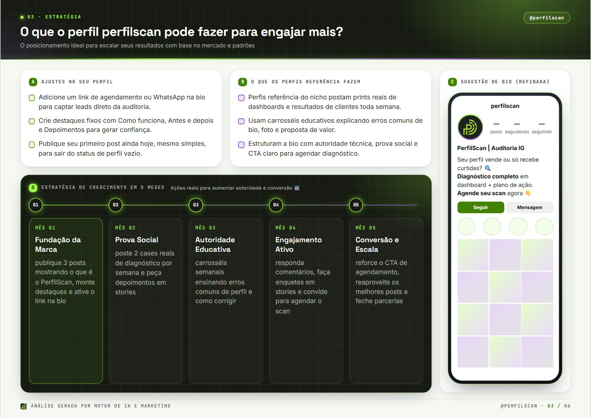
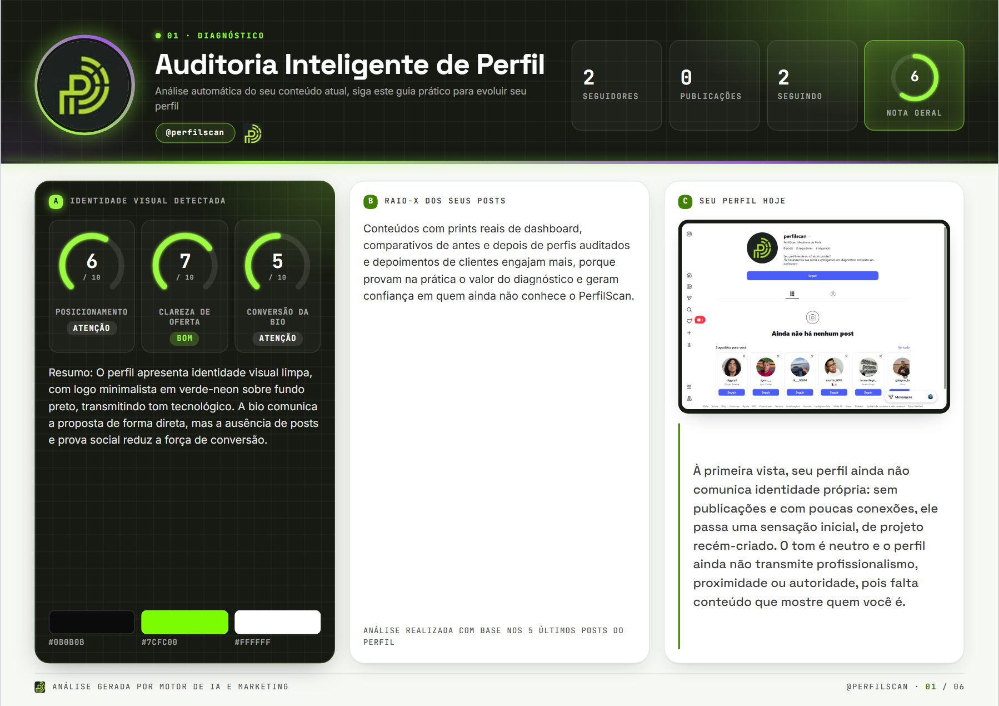

Amostra grátis
Prévia da auditoria
R$ 0
Veja a estrutura real da análise do seu perfil antes de decidir.
- Diagnóstico com nota geral
- Identidade visual detectada
- Primeiro mês do plano de crescimento
- Demais páginas bloqueadas
Auditoria de Instagram com IA
Escaneamos sua conta — bio, identidade visual e os últimos posts — e entregamos um diagnóstico completo em dashboard, com nota, raio-X e um plano de 5 meses pronto para executar.


Adicione um link de WhatsApp na bio para captar leads direto.
Como funciona
Manda o @, o público que quer atingir e o objetivo: vender mais, engajar ou crescer.
Lemos a bio, o visual do perfil e os últimos posts — curtidas, legendas e formatos — e cruzamos com o que funciona no seu nicho.
Um relatório visual em PDF, feito só para o seu perfil, com notas, estratégia e o passo a passo.
O que você recebe
Estas são páginas reais da auditoria do nosso próprio perfil. Toque para ampliar.
Nota geral do perfil, números reais, identidade visual detectada e como seu perfil é percebido à primeira vista.
Posicionamento, clareza de oferta e conversão da bio, com nota de 0 a 10.
O foco e as ações de cada mês, da fundação da marca à conversão.
Ideia, legenda, CTA e capa sugerida — é só postar.
Pronta para copiar e colar, com proposta clara e chamada para ação.
Onde investir, quanto, e como engajar sem gastar nada.
5 passos práticos e as ferramentas para executar tudo.
Para quem é
Já auditamos imobiliárias, restaurantes, clínicas de estética, pet shops, cafeterias e criadores de conteúdo.
Imóveis que geram contato, não só visualização.
Cardápio que dá fome e pedido no direct.
Promoções e lançamentos que lotam o delivery.
Antes e depois que vira agenda cheia.
Comunidade fiel de tutores do bairro.
Perfil com cara de lugar que dá vontade de ir.
Vitrine que converte em venda online.
Posicionamento e autoridade para fechar parcerias.
Planos
Amostra grátis
R$ 0
Veja a estrutura real da análise do seu perfil antes de decidir.
Mais escolhida
Auditoria completa
Sob consulta
As 6 páginas, feitas só para o seu perfil, prontas para executar.
O que vem por aí
O PerfilScan está virando uma plataforma que acompanha a evolução do seu perfil mês a mês.
Diagnóstico completo e plano de ação feitos por IA para o seu perfil.
Todo mês, de madrugada, o sistema escaneia seu perfil de novo e compara com a auditoria anterior.
Você vê se cumpriu o que o plano pedia no mês 1, no mês 2… e o que mudou nos números.
Acompanhamento contínuo para quem quer crescer com método, não com sorte.
Siga a gente
Erros comuns de bio, antes e depois de perfis auditados e bastidores do scan.
Abrir no Instagramperfilscan
PerfilScan | Auditoria de Perfil
Seu perfil vende ou só atrai curtidas?
🔍 Escaneamos sua conta e entregamos um diagnóstico completo em dashboard
Vamos escanear o seu
Preencha abaixo. A gente analisa o perfil e te chama no WhatsApp com os próximos passos.
Seu pedido chegou para o time PerfilScan. Em breve te chamamos no WhatsApp.
Enquanto isso, siga o @perfilscanDúvidas
Não. A análise usa só o que é público no seu perfil: bio, foto, destaques e posts. Nunca pedimos senha.
Para a análise precisamos ver o perfil. Deixe público durante o scan e depois volte ao privado se quiser.
Em PDF, com visual de dashboard, direto no seu WhatsApp ou e-mail. Abre no celular e no computador.
Serve para os dois. Já auditamos negócios locais, lojas online, profissionais de estética e criadores de conteúdo.
A amostra mostra o diagnóstico e o primeiro mês do plano, com as demais páginas bloqueadas. A completa libera as 6 páginas: raio-X, plano de 5 meses, posts prontos, bio refinada, pago × orgânico e plano de ação.